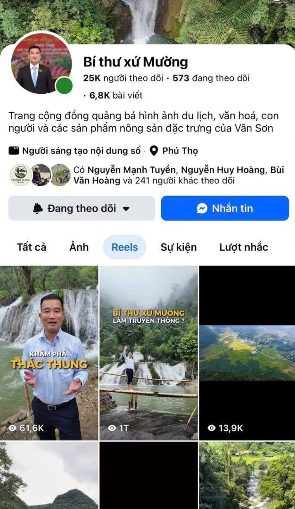
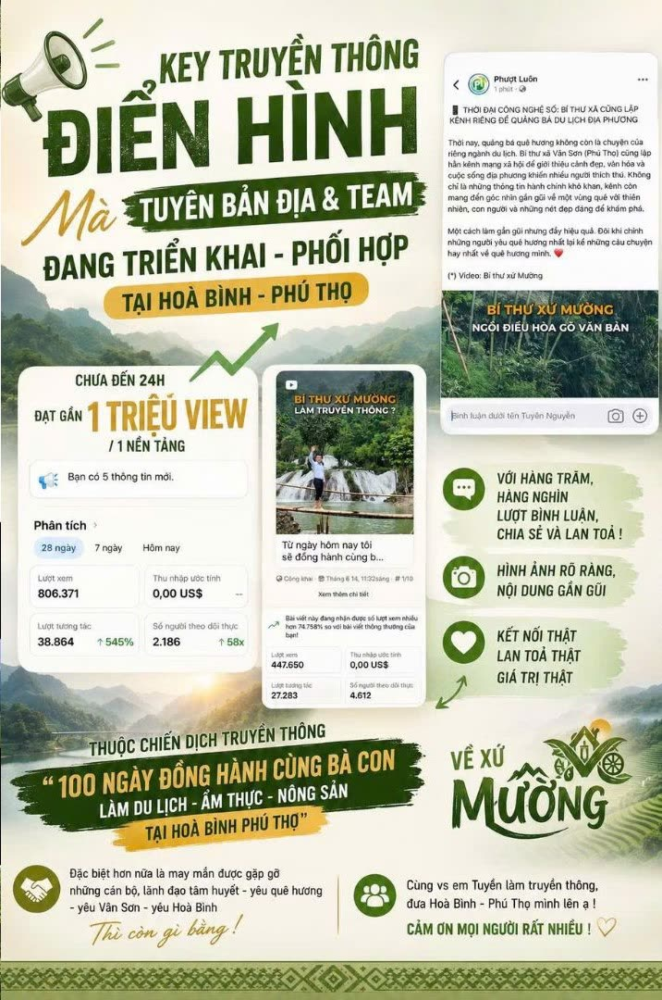
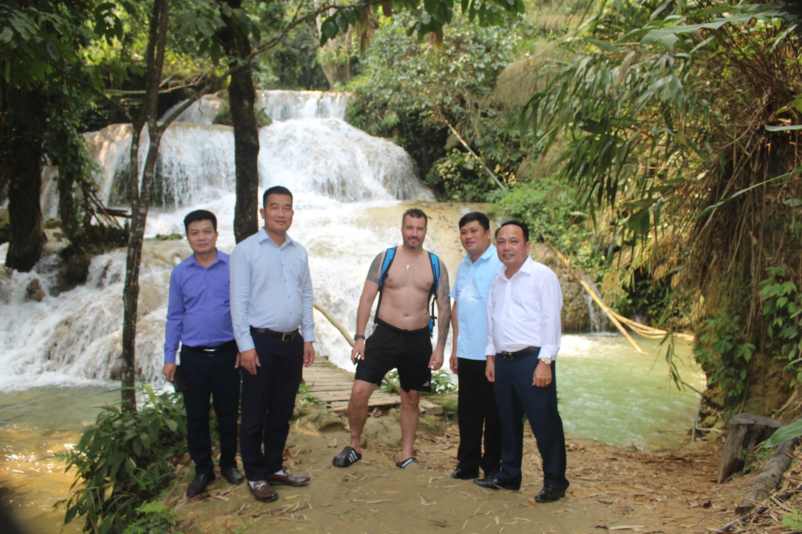

Không nhiều người hình dung một Bí thư Đảng ủy xã lại xuất hiện trên không gian mạng với vai trò nhà sáng tạo nội dung. Nhưng với ông Nguyễn Duy Tư, đó không chỉ là cách quảng bá du lịch Vân Sơn mà còn là hành trình thay đổi tư duy phát triển nơi “nóc nhà” xứ Mường.
Phóng viên đã có cuộc trao đổi với đồng chí Nguyễn Duy Tư — Bí thư Đảng uỷ xã Vân Sơn, tỉnh Phú Thọ; Chủ tịch HĐND xã Vân Sơn — để tìm hiểu động lực, kỳ vọng và hành trình đưa bản làng lên không gian số.
Làm mới hình ảnh người cán bộ cơ sởtrong kỷ nguyên số
PV: Trong suy nghĩ của nhiều người, hình ảnh một Bí thư Đảng ủy xã thường gắn với công việc quản lý, điều hành nhiều hơn. Điều gì khiến ông quyết định xuất hiện trên mạng xã hội với vai trò một nhà sáng tạo nội dung?

Bí thư NGUYỄN DUY TƯ: Tôi nghĩ đây là một việc làm hết sức sáng tạo. Ngoài công việc chuyên môn là điều hành cả hệ thống chính trị cấp xã, khi trực tiếp về làm việc tại địa phương, đặc biệt gắn bó với đời sống của bà con và với những thế mạnh, tiềm năng của xã, chúng tôi xác định hướng phát triển là du lịch cộng đồng, du lịch sinh thái, du lịch nghỉ dưỡng.
Tôi mong muốn quảng bá để mọi người biết đến Vân Sơn nhiều hơn. Đặc biệt, tôi thực hiện việc này để bà con thấy được rằng ngay từ người lãnh đạo cũng có thể là người truyền cảm hứng, từ đó cùng thay đổi cách nghĩ, cách làm du lịch.
Hiện nay, Vân Sơn là xã vùng cao với hơn 99% đồng bào dân tộc thiểu số. Trình độ phát triển còn chênh lệch khá nhiều so với các địa phương khác. Công tác chuyển đổi số cũng gặp nhiều khó khăn bởi thói quen sinh hoạt, sản xuất theo hướng tự cung tự cấp đã tồn tại từ lâu. Chính vì vậy, để thay đổi là cả một quá trình. Tôi cũng đã phải nghiên cứu, học hỏi và mất khá nhiều thời gian để suy nghĩ xem có nên thực hiện thử nghiệm này hay không.
PV: Từ một cán bộ lãnh đạo vốn quen với công việc quản lý, việc đứng trước ống kính và sáng tạo nội dung có khiến ông gặp nhiều khó khăn?
Bí thư NGUYỄN DUY TƯ: Thời gian đầu thực sự rất vất vả. Từ việc chuẩn bị nội dung, ghi hình đến cách xây dựng video kéo dài chưa đầy một phút mà vẫn hấp dẫn, gần gũi với người xem, đặc biệt là các bạn trẻ và du khách. Tôi luôn cố gắng để người xem có thể nhanh chóng hình dung về cảnh quan, con người và những điều thú vị của Vân Sơn.
Việc trực tiếp xuất hiện trước ống kính với vai trò người sáng tạo nội dung đối với tôi khá lạ lẫm. Làm sao để truyền tải được thông tin, cảm xúc về Vân Sơn một cách tự nhiên là điều không hề đơn giản. Có những lúc tôi phải đứng trước gương để tự tập nói, tự điều chỉnh cách thể hiện của mình.
PV: Việc một cán bộ địa phương xuất hiện trên mạng xã hội chắc hẳn cũng sẽ nhận về những ý kiến trái chiều, thưa ông?

Bí thư NGUYỄN DUY TƯ: Theo quan điểm của tôi thì mọi việc đều có hai mặt. Có thể sẽ có người cho rằng mình làm như vậy là để đánh bóng hình ảnh cho bản thân. Điều đó hoàn toàn có thể xảy ra khi mình tham gia sáng tạo nội dung. Nhưng tôi không quá bận tâm.
Điều tôi nhìn thấy là lợi ích mang lại lớn hơn rất nhiều. Với vai trò là người đứng đầu cấp xã, chịu trách nhiệm trước Đảng bộ, chính quyền và nhân dân về phát triển kinh tế - xã hội, đời sống người dân, tôi nghĩ rằng khi tham gia sáng tạo nội dung, mình có thể trở thành một nhân vật truyền cảm hứng.
Không chỉ truyền cảm hứng cho cán bộ, công chức trong xã mà còn có thể lan tỏa tới nhiều địa phương khác. Từ khi tôi bắt đầu triển khai, trên các trang cá nhân đã rất nhiều người hỏi về Vân Sơn, hỏi về các điểm đến, về dịch vụ ăn uống, lưu trú, nghỉ dưỡng. Việc này cũng đang góp phần quảng bá cho các homestay, các dịch vụ du lịch địa phương và tạo thêm động lực để bà con mạnh dạn làm du lịch.
Công nghệ số và mạng xã hội đang trở thành cầu nối giữa vùng cao với thị trường. Từ những tác động bước đầu ấy, Bí thư Nguyễn Duy Tư kỳ vọng có thể từng bước thay đổi nhận thức của người dân về du lịch, kinh tế số và phát triển địa phương trong kỷ nguyên mới.
Du lịch cộng đồngbước vào không gian mạng
PV: Anh nhiều lần nhắc đến việc thay đổi tư duy của người dân. Điều anh mong muốn nhất sau những video quảng bá là gì?
Bí thư NGUYỄN DUY TƯ: Điều tôi mong muốn nhất là thay đổi nhận thức, thay đổi cách làm của người dân. Tôi hướng tới việc mỗi công dân Vân Sơn đều có thể trở thành người quảng bá cho sản phẩm, văn hóa và vẻ đẹp quê hương mình.
Bên cạnh đó, tôi cũng muốn góp phần kết nối, tiêu thụ nông sản cho bà con. Đây là mục tiêu kép mà tôi xác định trong mỗi nội dung: vừa quảng bá du lịch bản địa, vừa hỗ trợ phát triển kinh tế địa phương.
Thực tế, Vân Sơn có rất nhiều lợi thế nhưng chưa được biết đến rộng rãi. Chúng tôi có khí hậu mát mẻ quanh năm, cảnh quan đẹp và nhiều sản phẩm nông nghiệp chất lượng. Từ ngọn su su, các loại rau ôn đới đến hạt gạo Đài Thơm 8 đều mang những đặc trưng riêng nhờ điều kiện thổ nhưỡng, khí hậu của vùng cao. Tôi tin rằng khi nhiều người biết đến Vân Sơn hơn, không chỉ du lịch được hưởng lợi mà nông sản địa phương cũng sẽ có thêm cơ hội tiếp cận thị trường.
Từ nông sản, OCOPđến mô hình làng số
PV: Có thể hiểu rằng phía sau câu chuyện quảng bá du lịch là mục tiêu phát triển kinh tế địa phương, thưa ông?
Bí thư NGUYỄN DUY TƯ: Đúng vậy. Hiện nay tôi đang định hướng từ những sản phẩm rất đời thường trong cuộc sống của bà con để xây dựng thành các sản phẩm đặc trưng, hướng tới sản phẩm OCOP, hỗ trợ bao tiêu và hình thành các chuỗi liên kết sản xuất. Từ các hộ gia đình sẽ hình thành chuỗi liên kết trong hợp tác xã, từ đó cung ứng sản phẩm ra thị trường.
Đây cũng là một trong ba khâu đột phá được xác định trong Nghị quyết Đại hội Đảng bộ xã: phát triển nông nghiệp gắn với phát triển du lịch. Chính vì vậy, công tác chuyển đổi số phải được quan tâm ngay từ đầu nhiệm kỳ. Chúng tôi phải phát hiện, nhân rộng những mô hình mới để ứng dụng vào đời sống người dân vùng cao.
Bên cạnh đó, Nghị quyết 27 của Ban Thường vụ Tỉnh ủy Phú Thọ cũng xác định mục tiêu xây dựng khu du lịch vùng cao Vân Sơn đến năm 2030. Đây có thể nói là đòn bẩy và cũng là căn cứ pháp lý quan trọng của Đảng bộ xã, tạo thêm động lực để chúng tôi quyết tâm chuyển đổi số trong mọi mặt đời sống, tập trung phát triển du lịch gắn với nông nghiệp và đặc biệt là bản sắc văn hóa dân tộc Mường đậm đà nơi “nóc nhà” xứ Mường.
PV: Sau khi thu hút sự chú ý trên mạng xã hội, anh có những định hướng gì để giữ chân du khách và tạo động lực cho người dân tham gia vào quá trình phát triển du lịch?

Bí thư NGUYỄN DUY TƯ: Điều này đòi hỏi sự chuẩn bị lâu dài chứ không thể làm theo cảm hứng. Hiện nay trong cuốn sổ của tôi đã có hàng chục ý tưởng nội dung. Ngay từ khi đăng video đầu tiên, tôi đã chuẩn bị sẵn khoảng 6-7 video khác và đặt mục tiêu mỗi tháng duy trì từ 10–15 video.
Ngoài quảng bá cảnh quan, tôi muốn phản ánh đời sống thường ngày ở vùng cao, từ lao động, sản xuất, sinh hoạt cho đến văn hóa của người Mường, từ trang phục đến tiếng nói. Đây là những yếu tố rất quan trọng để phát triển du lịch. Bên cạnh đó, tôi cũng muốn kể câu chuyện về nông sản địa phương, từ quá trình canh tác, thu hoạch đến chế biến — đều là những đề tài rất giàu chất liệu.
PV: Với cương vị người đứng đầu địa phương, anh hình dung như thế nào về tương lai chuyển đổi số của Vân Sơn?
Bí thư NGUYỄN DUY TƯ: Ban Thường vụ Đảng ủy xã đã thông qua chủ trương xây dựng mô hình văn phòng số và từng bước hướng tới mô hình làng số. Chúng tôi dự kiến lựa chọn những thôn phát triển du lịch cộng đồng để triển khai trước. Dù điều kiện hạ tầng vẫn còn nhiều khó khăn nhưng chúng tôi quyết tâm thực hiện.
Hiện nay tôi đang trực tiếp hướng dẫn một số chủ homestay xây dựng nội dung số, quảng bá dịch vụ và hình ảnh địa phương. Tôi muốn chính họ trở thành những nhân vật truyền cảm hứng cho cộng đồng.
“Chuyển đổi số không phải là câu chuyệncủa riêng chính quyền,mà phải trở thành câu chuyệncủa mỗi người dân.”
Bí thư Nguyễn Duy TưKhi người dân có niềm tin, được đồng hành và chủ động tham gia, đó sẽ là động lực để Vân Sơn phát triển bền vững trong tương lai.
Điều Bí thư Nguyễn Duy Tư kỳ vọng là ngày càng có nhiều người biết đến Vân Sơn hơn, nhiều du khách tìm đến và nhiều người dân có thể tự kể câu chuyện quê hương mình trên không gian số — để công nghệ và truyền thông số trở thành một phần của hành trình thay đổi vùng đất nơi “nóc nhà” xứ Mường.